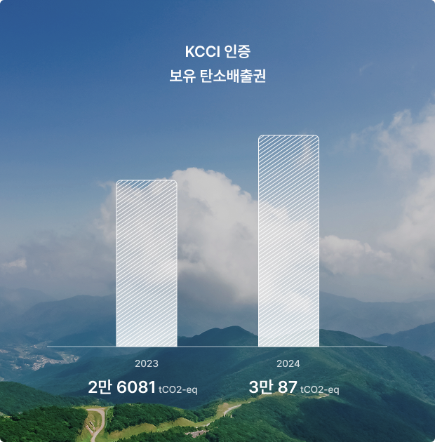

Sustainability
탄소배출권 인증 누적 56,000톤+ 스타스테크가 만들어가는 지속 가능한 미래
스타스테크는 불가사리를 폐기하며 발생하는 소각 과정을 원천적으로 대체하여 2023년 2만 6081 tCO2-eq*, 2024년 3만 87 tCO2-eq의 탄소배출권을 인증받았습니다.
2년간 약 누적 5만 6000톤 이상의 탄소배출권을 보유하며 제품을 쓸수록 탄소 감축에 기여하는 모델을 구현했습니다. 제품을 선택하는 순간이 곧 탄소 감축 활동으로 이어지는 선순환 구조, 스타스테크가 만드는 지속 가능한 미래입니다.
*tCO2-eq: 온실가스 1톤당 이산화탄소 환산량

Impact
해양 생태계를 살리고 기후 위기에 대응하는 '지속 가능한 솔루션'을 공급합니다.

해양폐기물 무상수급
정부로부터 불가사리를 무상으로 양도 받는 프로세스를 구축하여 폐기 비용을 절감하는 동시에 제조 원가를 낮췄습니다.

해양폐기물 R&D 제품화
독자 기술로 완성한 불가사리 업사이클링 기술을 통해 Zero-Waste의 기술적 자원 순환을 이루어냈습니다.

지속가능한 친환경 제품 제공
미국, 캐나다 등 글로벌 시장의 엄격한 환경 규제를 충족하는 탄소 저감 제품으로 지속 가능한 산업 생태계를 만들어갑니다.